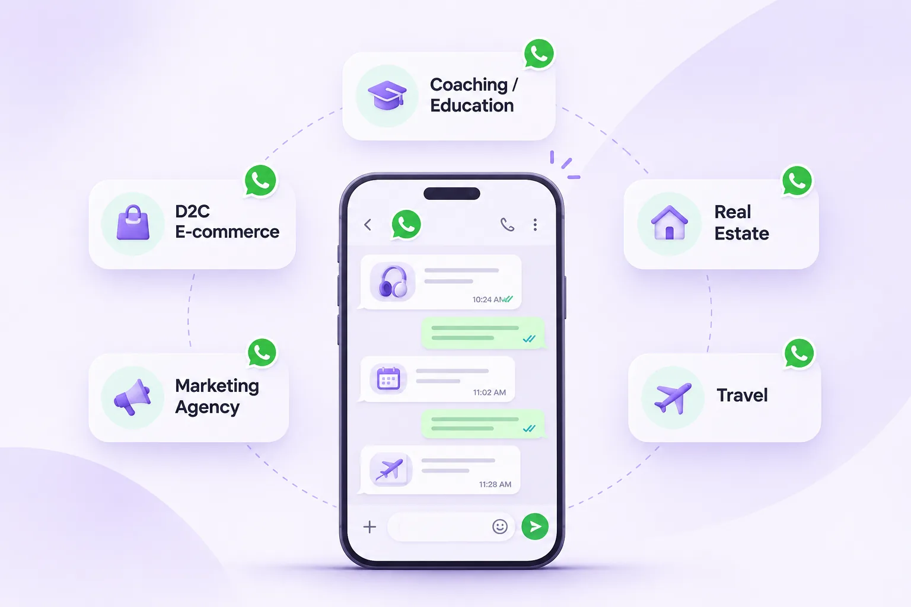

WhatsApp Marketing Use Cases for 5 Indian Business Types

A D2C brand, a coaching institute and a travel agency may all use WhatsApp—but they should not run identical campaigns. Effective business messaging starts with the customer's actual question, the right timing and a clear next step.
Why industry context matters
A customer waiting for a delivery update has different expectations from a prospective student asking about batch timings or a buyer requesting property details. Reusing the same automation for all three situations creates friction.
Before selecting a tool, map the customer journey in your own business: enquiry, qualification, transaction or booking, support and follow-up. Then choose which conversations really benefit from a WhatsApp workflow.
1. D2C brands: updates and relevant re-engagement
For an online retailer, useful workflows can include order confirmations, shipping notifications, returns support and product questions. Eligible marketing campaigns may help opted-in customers discover a relevant collection or seasonal promotion.
Keep transactional information accurate and promotional communication separate. A customer should be able to understand why they received the message and how to stop unwanted updates.
2. Coaching institutes: admissions without lost leads
During an admission season, an institute may receive questions about course eligibility, fees, batch dates and demo classes. An organized messaging inbox helps staff separate new enquiries from students who need a follow-up call.
An automation might provide a verified course brochure or acknowledge a demo request, while a counsellor handles personal advice or complex questions. The aim is to support admissions teams rather than send repetitive sales nudges.
3. Marketing agencies: client workflow separation
Agencies may run messaging operations for multiple brands. Each client needs distinct data access, approved templates, permissions and reporting. Ask software vendors how they handle client-level separation and ownership.
Create a repeatable checklist for template reviews, customer consent, campaign approvals and post-campaign reports. Consistency matters more than broadcasting at maximum volume.
4. Real estate: property enquiries and scheduled visits
Real-estate teams often manage enquiries from listings and advertising campaigns. A practical workflow can collect basic preferences such as budget range, location and intended visit date, then assign the lead to a property adviser.
Only send matching property details when appropriate, and use customer-approved communication for promotions. A visit confirmation or rescheduling message should be more useful than a stream of generic offers.
5. Travel agencies: quotes and trip-related communication
Travel agencies handle destination questions, itinerary requests, quotation revisions, payment milestones and trip reminders. A shared conversation history can help prevent details from getting lost between consultants.
Where reliable booking data exists, eligible notifications can keep customers informed. For complex cancellations, travel disruptions or policy-sensitive advice, prioritize a human response.
Choosing your first workflow: a practical table
Every industry should begin with one common, repeatable problem. Measure whether the workflow improves the customer experience before expanding to marketing campaigns.
Avoid using automation simply because a platform offers it. A manual but accurate reply may be better than a confusing automated sequence.
| Industry | Useful first workflow | Measure |
|---|---|---|
| D2C | Verified order-status updates | Support enquiries resolved |
| Coaching | Course enquiry routing | Response and follow-up time |
| Agency | Client campaign approval workflow | Review accuracy |
| Real estate | Visit confirmation | Scheduled visits attended |
| Travel | Quotation follow-up | Requests resolved |
What to look for in the software
Choose a platform that makes it easy to review conversations, assign responsibility, understand costs and manage eligible templates. Verify integrations you actually need, such as a commerce system, CRM or booking tool.
Notiq is being built for Indian SMBs, D2C brands, agencies and coaches with a focus on straightforward interfaces, transparent Meta-rate handling and practical workflow design. It is currently in pre-launch, so capabilities and access should be confirmed before planning a production rollout.
Frequently asked questions
Which Indian businesses can benefit from WhatsApp marketing?
Businesses with recurring customer conversations—including online sellers, education providers, agencies, real-estate teams and travel businesses—may benefit when they have appropriate consent and a real workflow to improve.
Can a coaching institute automate admissions enquiries?
It can automate appropriate information delivery and routing, while keeping counsellors available for complex decisions.
Should real-estate agents use WhatsApp broadcasts?
Only for eligible, consent-based messaging that complies with applicable Meta policies and laws. Relevant one-to-one follow-up is often more useful than mass promotion.
How can I choose a WhatsApp marketing platform?
Compare pricing clarity, account setup, data separation, team collaboration, supported integrations and quality of support.
Build simpler WhatsApp communication with Notiq
Bitmint Lab is developing Notiq with clean interfaces, transparent Meta-rate handling and useful business messaging workflows in mind. Features and plan details will be confirmed as launch approaches.
Explore Notiq's upcoming WhatsApp automation platform and early access →
New to the API? Start with our complete WhatsApp Business API guide for India.
Editorial note: Verify current Meta pricing, eligibility, template rules and consent requirements before running campaigns. Illustrated product visuals are not guaranteed live feature screenshots.